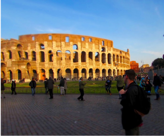
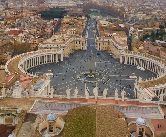
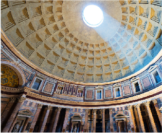

Explore: Rome
Colosseum

- Ancient stadium where gladiators fought to the death.
- Historians estimate that over 500,000 people parished in the arena as
well as around a million wild animals.
St. Peter’s Basilica/ Square

- Technically located in the Vatican City.
- In the courtyard stands 140 statues of saints, each one about 10 feet tall.
Pantheon

- The top of the Pantheon dome is an open hole or oculus, allowing light and
occasional rain to enter.
- Within the confines of the building lie tombs of poets and kings.